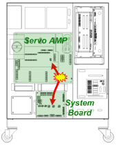
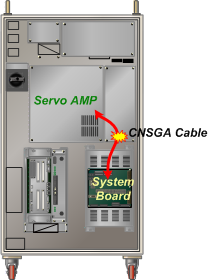

기존 에러코드: E0014 안전스위치(EM, OTR, TS 등) 순간접촉
1.1.64.1. 개요
앰프에서 시퀀스의 이상을 감지하여(PWMON신호가 OFF) 모터전원을 차단하였습니다. 주요원인은 서보AMP와 시스템보드간의 PWMON신호 배선경로에 단선 또는 접촉불량이 발생했습니다. 이로 인해 AMP가 PWM지령을 차단한 것입니다.
1.1.64.2. 원인 및 점검방법
|
(1) CNSGA케이블을 점검하십시오.
(2) 시스템보드를 점검/교체하십시오.
(3) 서보앰프를 점검/교체하십시오. |
(1) CNSGA케이블을 점검하십시오.
아래의 그림과 같이 서보앰프와 시스템보드 간에는 PWMON신호를 주고받기 위하여 CNSGA케이블이 연결되어 있습니다. 케이블이 서보앰프 또는 시스템보드에서 케이블이 커넉터에 잘 접속되었는지 확인하십시오.
CNSGA케이블이 손상되었을 수도 있으므로 교체한 후 점검해 보십시오.

(a) Hi5a-S 제어기

(b) Hi5a-N 제어기
그림 1.179 서보AMP와 시스템보드간 CNSGA 연결
(2) 시스템보드를 점검/교체하십시오.
CNSGA케이블에 문제가 없을 경우 시스템보드를 교체, 점검하십시오. PWMON신호 출력회로에 이상이 있을 수도 있습니다.
(3)서보앰프를 점검/교체하십시오.
CNSGA 케이블과 시스템보드에 문제가 없는 경우 서보앰프를 교체, 점검하십시오. PWMON신호 입력회로 및 모니터링부에 이상이 있을 수 있습니다.